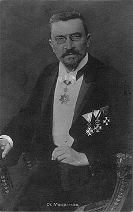
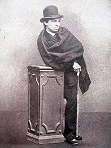
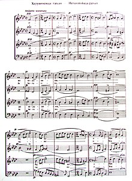

| Stevan Mokranjac |
|---|
|  |
Stevan Stojanović Mokranjac (January 9, 1856–1914) was a Serbian composer and music educator. His work was essential in bringing the spirit of Valach Serbian unwritten folk poems into organized art.
He was born in Negotin. From the birthplace of his parents he drew the second last name Mokranjac (literally: resident of Mokranje).
He graduated from the Belgrade high school, and attended the natural science and mathematics section of the University of Belgrade. In 1879 he traveled to Munich where he studied music in the class of Josef Rheinberger. After a brief break, he continued to study in Rome in the class of Parisotti, in 1884. Returning to Serbia in 1884 he briefly became the conductor of the Kornelije Stanković choir of Belgrade.
From 1885 to 1887 he studied music in Leipzig, Germany. Upon his return to Serbia in 1887 he became the conductor of the Belgrade singing society (Belgrade Choir). From 1887 to 1900 he taught music at the Belgrade high school, and in 1901 transferred to Bogoslovija (Belgrade Theological College) where he taught church singing. Together with Stanislav Binički and Cvetko Manojlović, Mokranjac founded the first independent music school in 1899 - Serbian Music School in Belgrade. He remains the director of this school until his death. Today the school bears his name. His work as a melograph bore many transcriptions of thus far unwritten folk songs.
Stevan Mokranjac died in Skopje, Macedonia (then Kingdom of Serbia), aged 58.
Every year, the town of Negotin organizes a music festival in his honor called Mokranjčevi dani (Days of Mokranjac). The town also has a Mokranjac museum.
|  |
| "Mokranjac as undergraduate student, 1877." |
His life was highly influenced by church and folk songs, and he used these two types of music as inspiration for his work. His most famous pieces are the fifteen Rukoveti (Potpourri; literally: "handfuls" or "bunches") - a collection of songs and music (orchestral suites) based on motives of Serbian folk music from Bosnia and Herzegovina, Serbia Proper, Montenegro, Kosovo and Metohija, Macedonia and Bulgaria. His other prominent folk-based works include Primorski napjevi (Coastland tunes), and Kozar.
A significant number of his works were made for church services. Such as the Božanstvena Liturgija Svetog Jovana Zlatoustog (The Divine Liturgy of St. Chrysostom), from which the Heruvimska pesma (Cherubic hymn) is most famous. Another two famous religious pieces are tebe boga hvalim (Te Deum) and Veličanije Sv. Savi (Megalynarion to St. Sava).
|  |
| Notes of Cherubim Hymn by Stevan Mokranjac |
Some of the most famous Mokranjac's compositions are: